通过 36/36；失败 0/36。AI 看图结果只记 agent_visual_review；本页不代替用户或教师 humanReviewed 签收。
状态：passed；族：plane；候选 hash：63940f219a09b7e4694ec6290ce1001f2598813df02da47aec425bfae009d69b
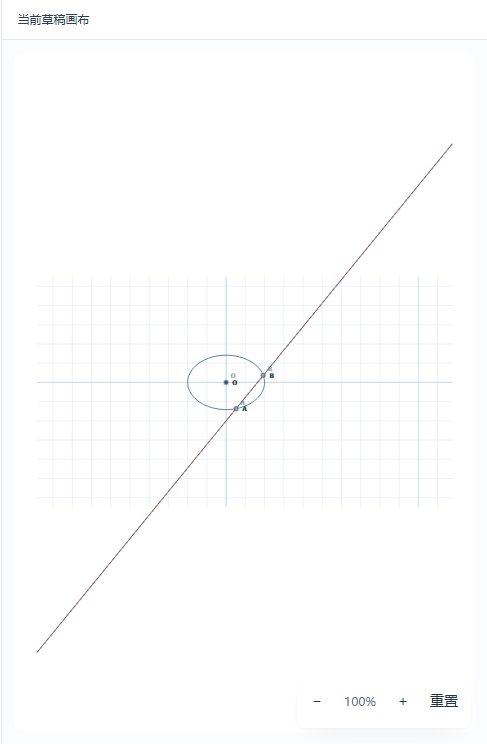
状态：passed；族：plane；候选 hash：94ae8d0e9829646f15a288d60f8cc1448c1825a1fdf0b29d15351463f27d1d04
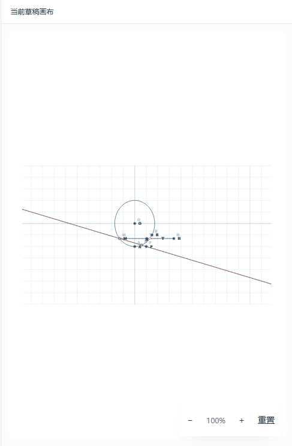
状态：passed；族：plane；候选 hash：e653e186af4b8eb022d6b97886aad716c3b0601de9fc04bb2eebeb0d36228d65
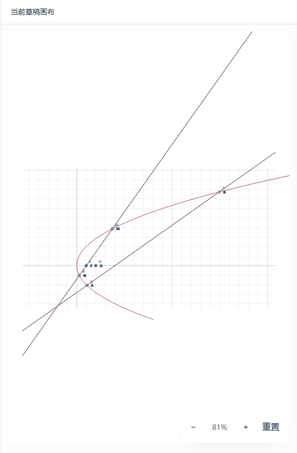
状态：passed；族：function；候选 hash：45e5538f8ddf28bc2c5d95f5214f3204c8a828d17fa19db4d9109c3ca156b237
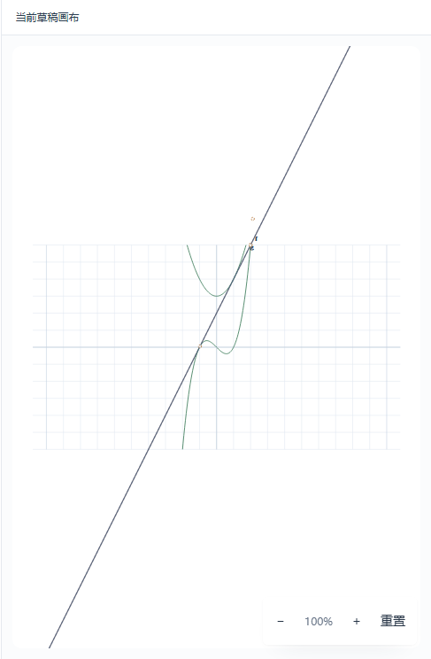
状态：passed；族：plane；候选 hash：8c4dd66d5be71d9dd14d98b635f86a34d20d62407bad29a62c8bcdac3eee90dc
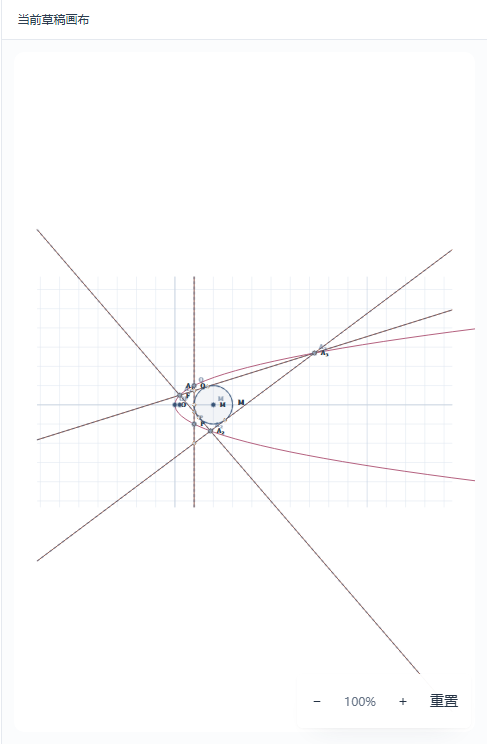
状态：passed；族：plane；候选 hash：e0c943c02469c62953f3a440a334ae0b56264a98dc9207d36e2efb99a0fe23f7
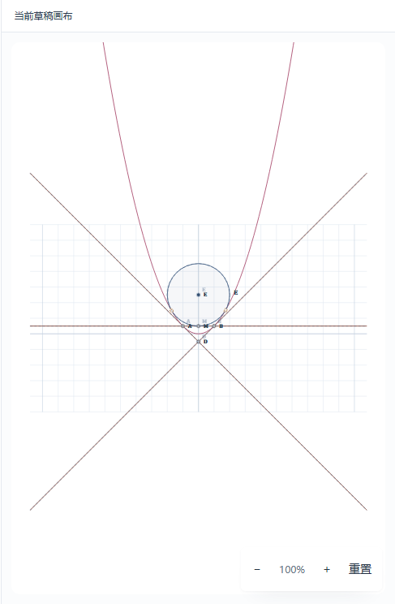
状态：passed；族：plane；候选 hash：b2ce49a18a6d13a3669a0daf092d8f8ed2c9485e40469dad0a563c54929deffa
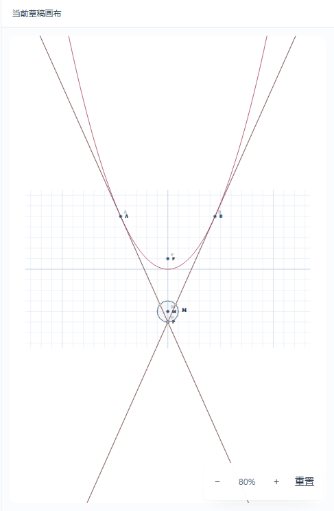
状态：passed；族：plane；候选 hash：e8280e2c7d7d539e377c5a68a6a0aec79e888716746bff6488d5c2ede351a715
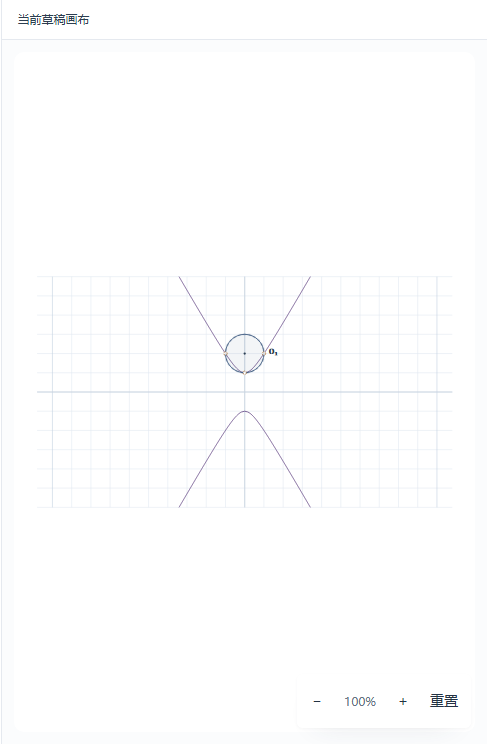
状态：passed；族：function；候选 hash：2ac6601022fd5893198c63b0a6d1b00c021fde91499b9422c04b9e0684f07b01
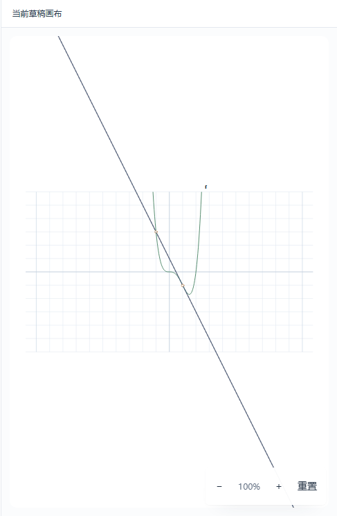
状态：passed；族：solid；候选 hash：22cd8f2f2ebafd10b069d9e1d5a49b8f4e79bfec57f4d37ba3ae4c264cc4ee5b
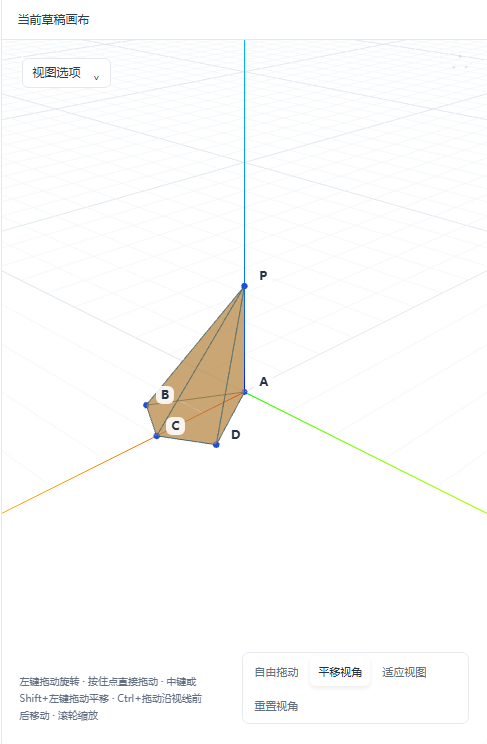
状态：passed；族：fold；候选 hash：914e73ba1ffb331c67f2aa59135eb9776c7ab173a7fa3438d5880f116e520008
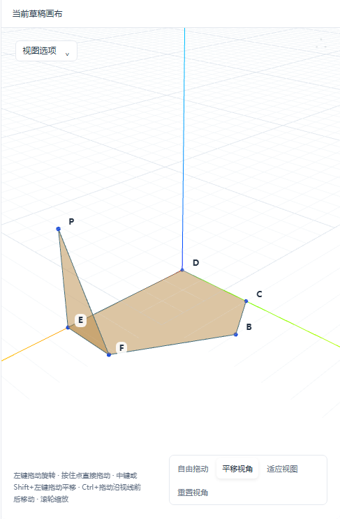
状态：passed；族：solid；候选 hash：ef2cfaa5999241f7c5084323995dba16e3c4aa61e1896b88153bc94124fdc682
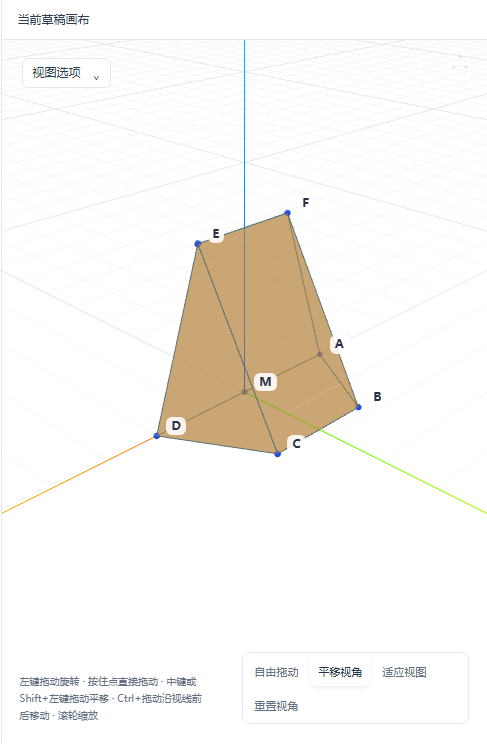
状态：passed；族：solid；候选 hash：64403d6ea1286df28b7ea5ea5173460362b85cbcbcc32a64d67165cd2de1cf45
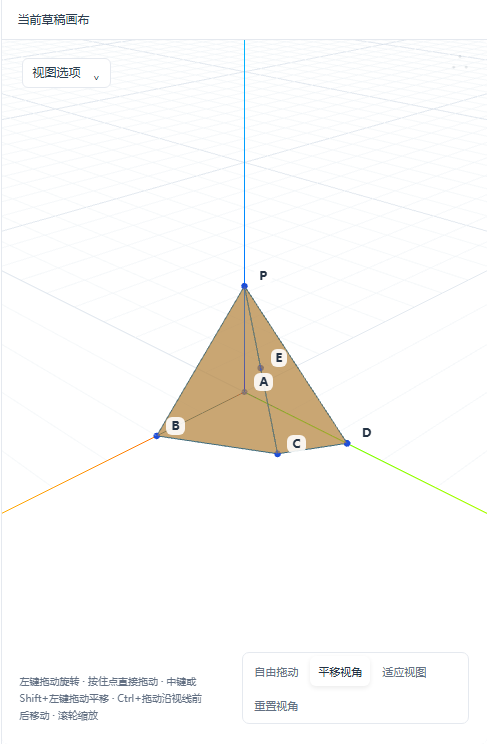
状态：passed；族：solid；候选 hash：a0e23a349603b39bf2c3a8eb18586f708b4a8695280d7cef65551bd328bcc6d4
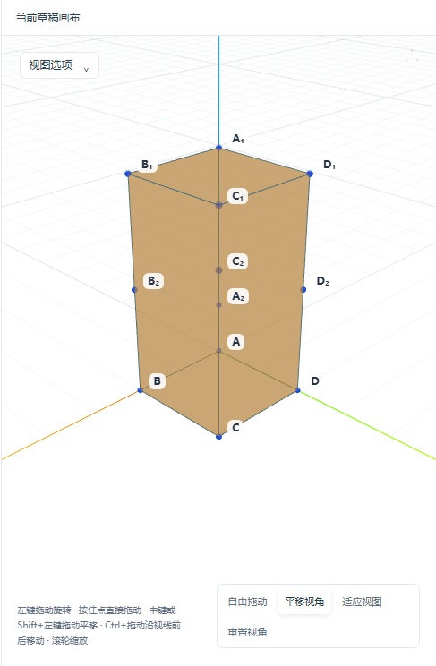
状态：passed；族：solid；候选 hash：b164fd0e59a8557c384d35157bd9e489959fbc4dff8df74bb039fe422402dc46
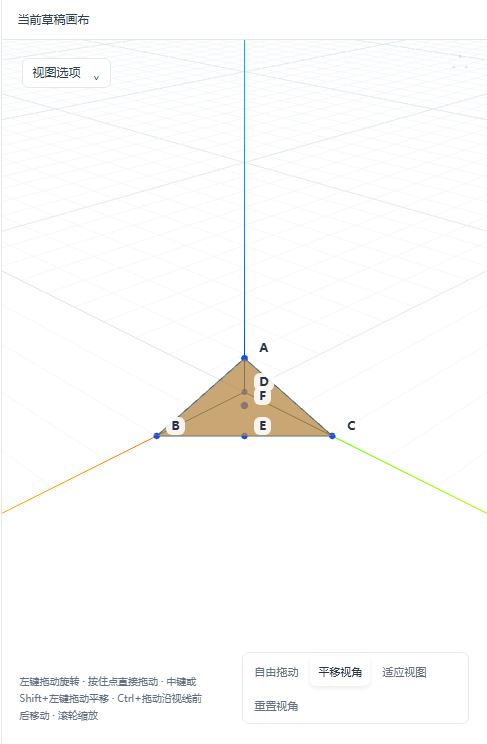
状态：passed；族：solid；候选 hash：9be4b5c6ee77beedff8250043b8224189f3dc68555a9c624bb7864bd04465675
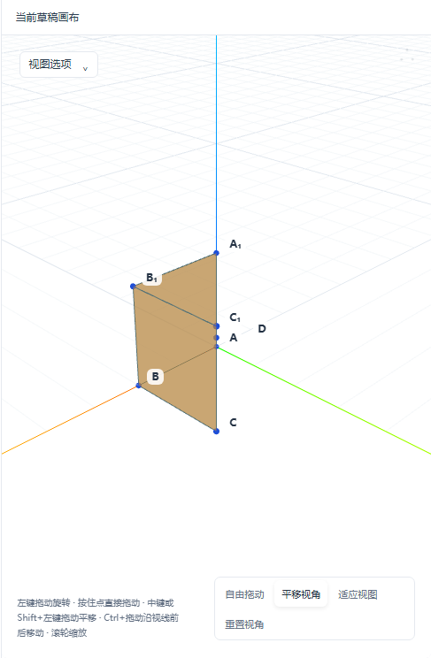
状态：passed；族：solid；候选 hash：726e523405c47b8c6c11b83e3bcfbf6a1d7ead41e26f74e2d65ebe41243787a1
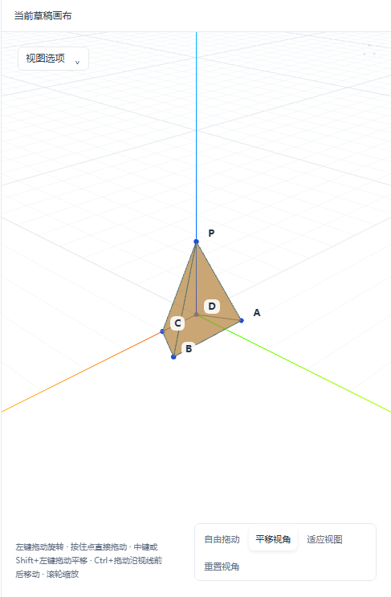
状态：passed；族：solid；候选 hash：7ba9724c3c6dff9fd6e06aa616882da0760bba036eaf6efabc51ecfc59e63396
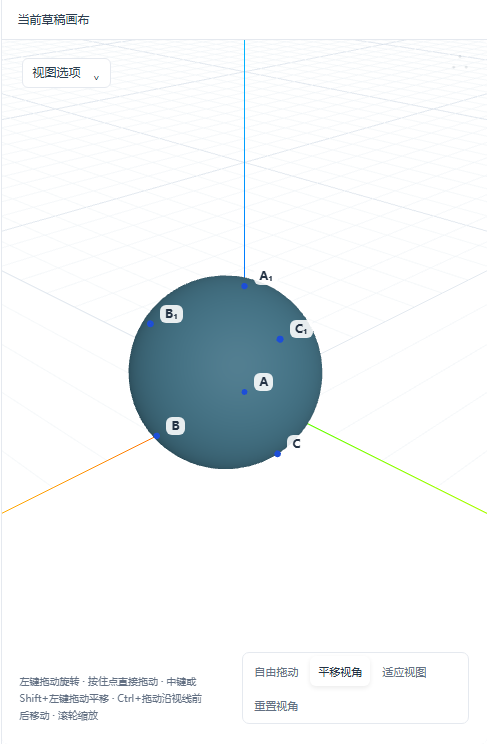
状态：passed；族：plane；候选 hash：1868e8debf639f0400de5085d07fbb664780ae9d1c0672af92c474005df26b3e
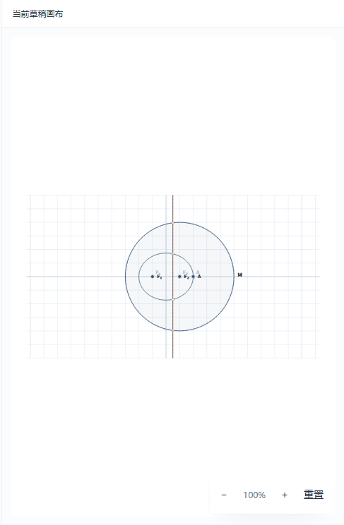
状态：passed；族：plane；候选 hash：5cd30cb84ab425863024bc9a8b3730a82b1f2d880e4e17e4709041597436d3ce
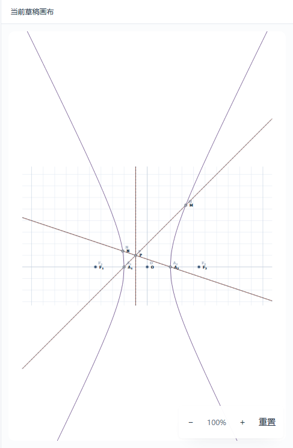
状态：passed；族：plane；候选 hash：065c50c6d9d7ed0797308110e1562e2745657ae4e1c331db8d73dacac88ac640
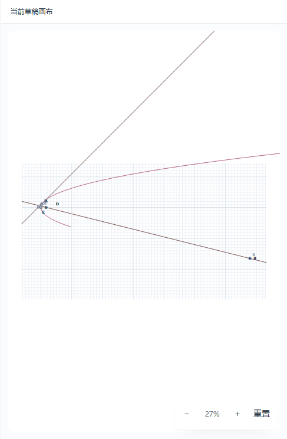
状态：passed；族：plane；候选 hash：e44935f34dba704b0e869bdcc4afcebe3436301c0570091b9c32cecc4734ff52
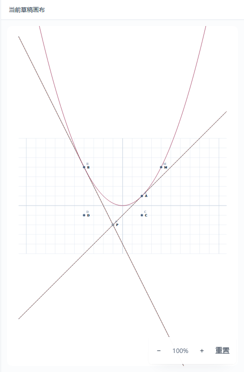
状态：passed；族：plane；候选 hash：902e4a9cda2c72e3d89dbbc32bb30cc5c8919f861ca5471fac9f6854dcdef6ab
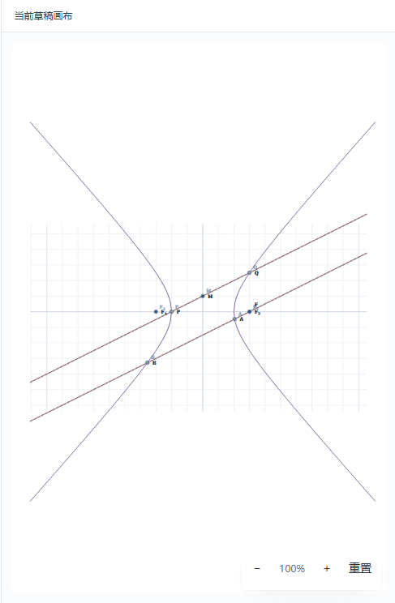
状态：passed；族：plane；候选 hash：1025cb287dd252b436b5b4873e7161b14cf11991830939be714575cbc349e670
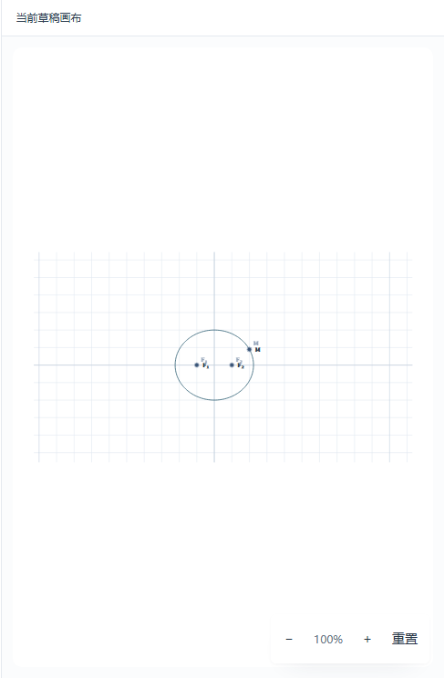
状态：passed；族：plane；候选 hash：3eb714d4138eced040f8dc0eee7ae6a3f2ccebefe5411810ce8b682723e42a13
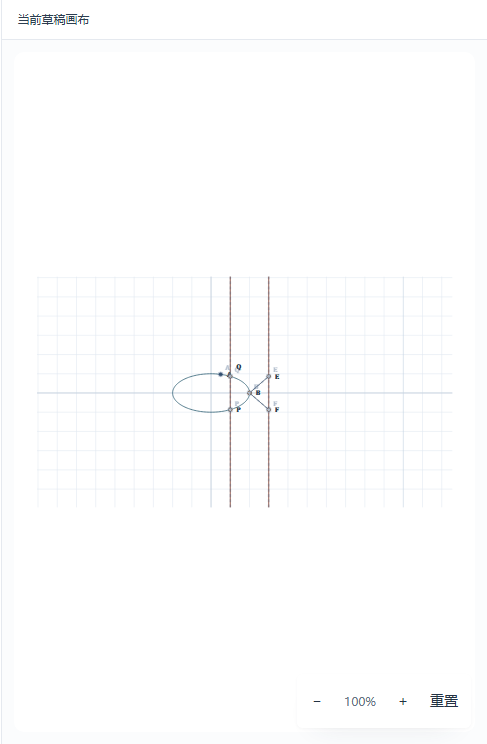
状态：passed；族：plane；候选 hash：63f27ca185f153eaa935fe860c44fa9a5133f29f67ae23c44a07938a48fc457d
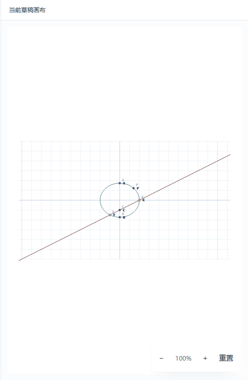
状态：passed；族：plane；候选 hash：ac0daa960034a44dda0c6f806bb150292bd84d1fa6ad415b0c1a546cb0fcc33b
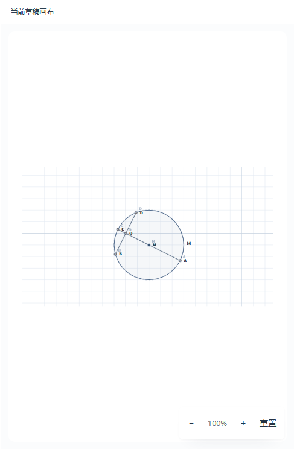
状态：passed；族：fold；候选 hash：53a1a6fa86212c3d33f15626c8702cd21fd3e9f6277932d4cd4aba881a20bbb4
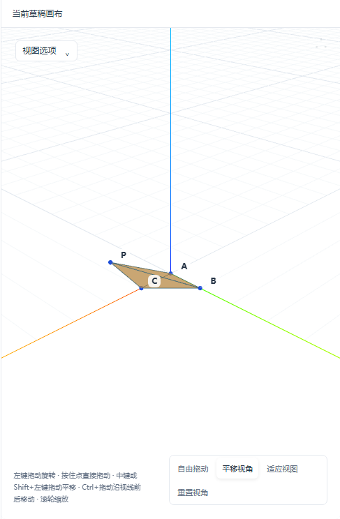
状态：passed；族：solid；候选 hash：51e2ecc6a0428afb0a489e6b0f8a28f3d8b4a551d625a2d1e34af8ba4a3a686f
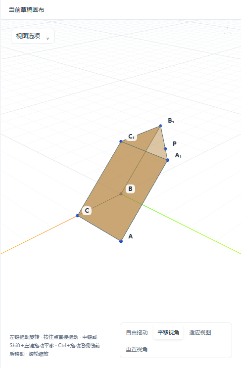
状态：passed；族：solid；候选 hash：67460284eb360b91421b593e696b897b25809a360689a93c3138a636a3fdeb6d
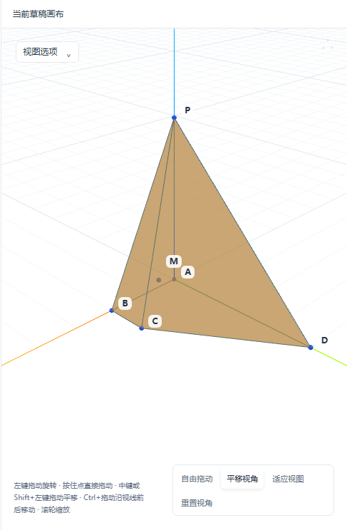
状态：passed；族：fold；候选 hash：6e95e3f4ea3c9432d6b62d710dcf30c56288f7c35843a52921b363ddd48d2c47
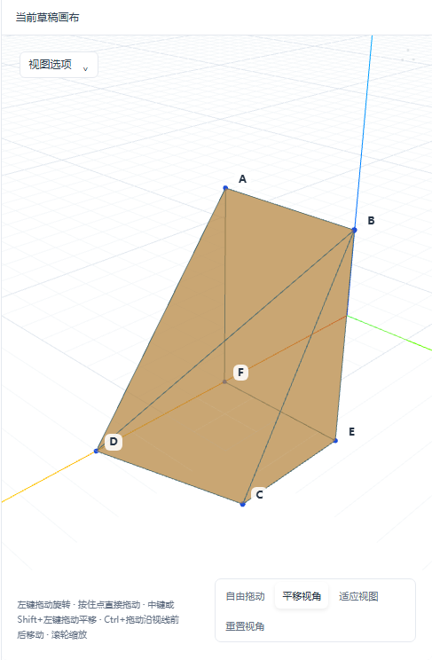
状态：passed；族：solid；候选 hash：195bee07ce7910f4d85444316b18e97de47bf20728132edc983d822bd86a9411
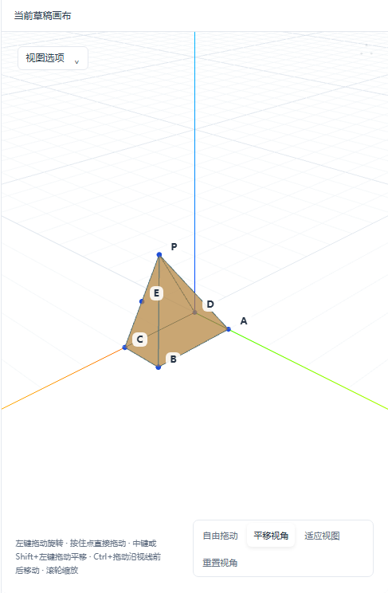
状态：passed；族：solid；候选 hash：d3e412c36f26ef697a770a1f78c0c5ce12bcb93c832c6d31bb3245169defd90b
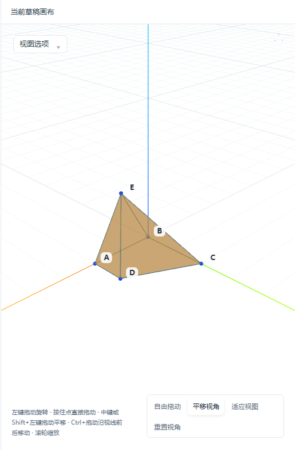
状态：passed；族：solid；候选 hash：9d8e26ff0f3d8bdd43b3c36677f5b96a994142116d08f6146b4e7474eae1c333
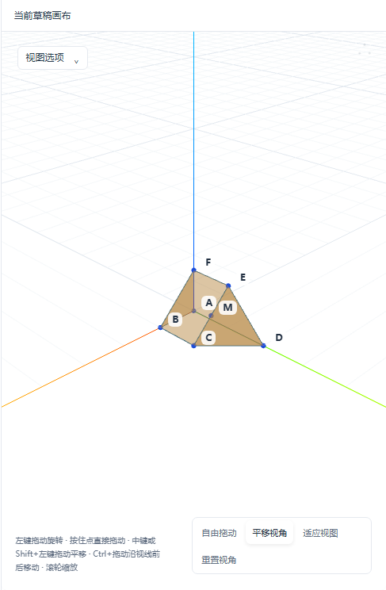
状态：passed；族：solid；候选 hash：2a42dc9f04821a9ae642a1705006f5748ad028d7fcfb090ad7fde371476e863b
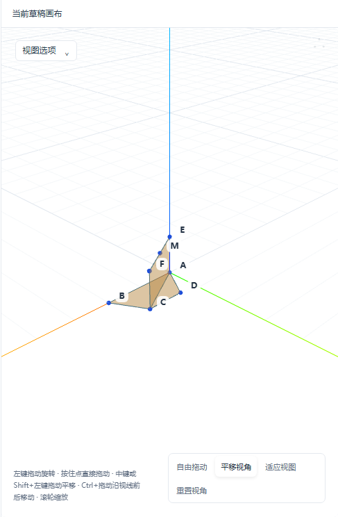
状态：passed；族：solid；候选 hash：428c18d22db11ba958c9b41b531f6a82c820fa39b362f2c79622c8836c930f40
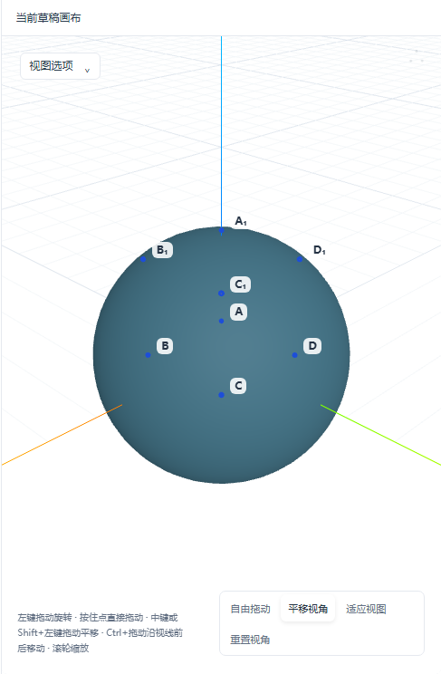